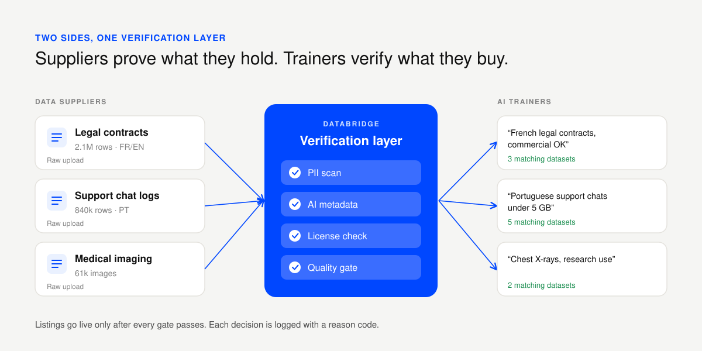
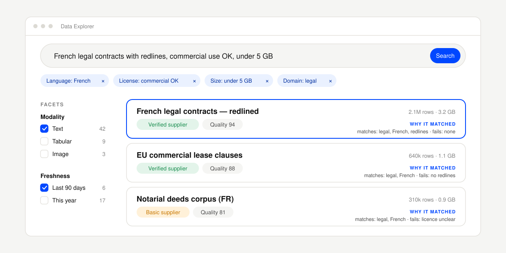
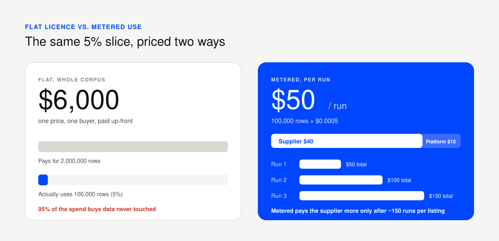
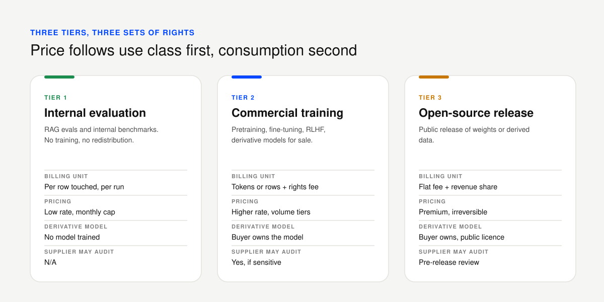
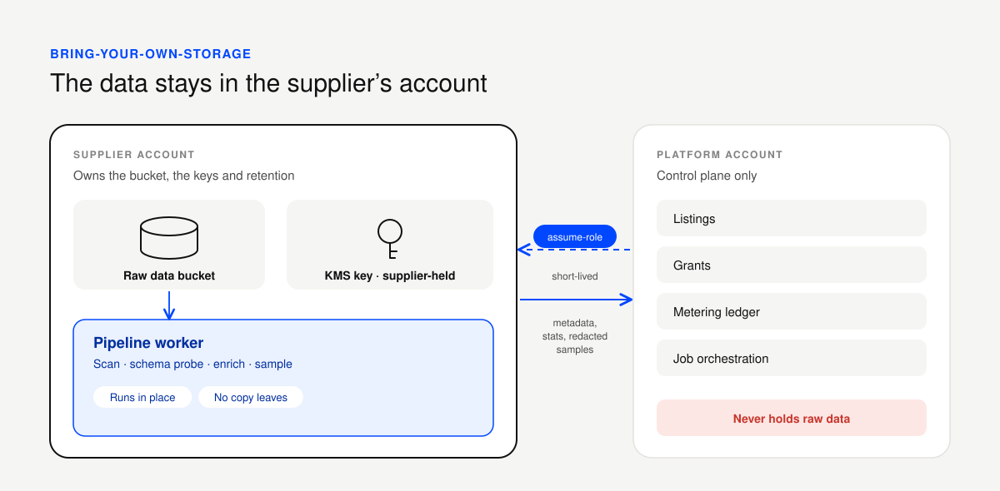
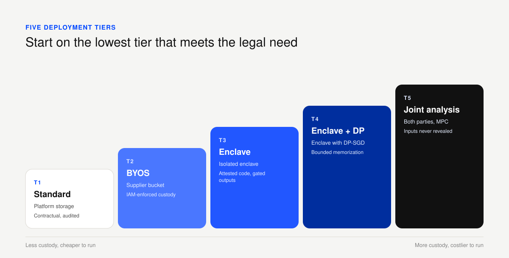

Overview
Data is easy to find. Trust isn't.
Before an AI team pays for a dataset they want four answers. What's in it? Are we allowed to train on it? Is it clean? Will it still be true next quarter? The people who own useful data usually can't answer any of those cheaply. Manual review is the obvious fix, and it doesn't scale: it costs the platform more than a small dataset earns.
It gets worse from both sides. Suppliers upload files with no description, no documented schema and personal data hiding in free-text columns. Buyers don't search by dataset name, they search by task, like "French legal contracts, commercial use OK", which keyword search can't read. And each side distrusts the other, so the product has to win both at once.
Approach
What I set out to do
My bet was to move the expensive checking to upload time and let models do it. When a supplier uploads a file, the system writes the metadata, finds and scrubs personal data, guesses the license class and makes the dataset searchable in plain language. Suppliers get a publish flow that takes minutes. Buyers get listings that carry checked facts instead of seller claims.

These are the targets I designed against. They're goals for the concept, not measured results.
How it works
Two flows: suppliers push files through an ingestion pipeline, and buyers search through a retrieval flow. Click through the stages.
Supplier side: from file to listing
Upload
Resumable upload straight to object storage, so files never touch the app server. It takes CSV, Parquet, JSON Lines, PDFs and image archives, with a virus scan on arrival.
Stage
Files sit in a quarantine bucket buyers can't see. A schema probe reads the first rows and works out types, row counts and null rates.
Scan
Fast, explainable detectors run first (emails, phone numbers, IDs, card numbers), then a statistical pass on column samples. The output is a PII report per column.
Enrich
An LLM drafts the title, description, tags, language and a suggested license class. It's always a draft, never auto-published.
Gate
A rules engine either approves the listing, sends it back to the supplier to fix, or flags it for a human, and logs why every time.
Publish
The listing goes live. The dataset is versioned, and its hash and license snapshot are frozen.
Buyer side: from task to purchase
Query
The buyer types a sentence or uses filters for domain, language, license, size and freshness.
Parse
The query splits into hard filters ("license must allow commercial training") and the softer meaning ("customer support chat in Portuguese").
Retrieve
Keyword and vector search run together. The hard filters apply before anything gets ranked.
Rank
Relevance, quality score, supplier trust, freshness and fit with the buyer's history are blended into one order. Every result says why it matched.
Preview
Schema, a PII report summary, license terms and a pre-scrubbed sample, all before the buyer pays.
Access
Buying creates a scoped, time-limited grant. Usage is metered, and lineage records which dataset version went into which training run.
Underneath, an object store holds the files, a relational database holds listings and grants, and a vector index holds embeddings. The supplier dashboard and the buyer catalog read the same job state, so the two sides never disagree about what's live. For the Python-side tooling I'd start with a hosted embeddings API and pgvector, and keep ingestion on a plain job queue with explicit states. Ingestion has to be auditable, so I'd avoid agent frameworks there.
The two screens
The supplier screen has one job: turn a raw file into a trusted listing with as few decisions as possible. Blocking issues sit in a fix-it list at the top, each with a one-click resolution: redact, drop the column, or mark it non-personal with a logged reason. Suppliers can exclude a column from the listing without deleting it, which takes away the fear of over-sharing, and a "preview as buyer" toggle shows exactly what buyers will see.

The buyer screen has one search bar and removable chips underneath showing how the AI read the query. That keeps its interpretation visible, so the buyer can correct it. Facets stay synced with the chips, and each result card shows a trust badge, a quality score, the license class and a line saying why it matched. Before purchase there's a one-click license check for the buyer's use case, and a preview of the access grant.

Pricing by use, not by file
Selling whole datasets under flat licenses breaks down fast. A retrieval eval might need a few hundred pairs out of a 2 million row corpus, and a flat price charges for the other 95%. Fine-tuning teams run many short cycles and want to pay per experiment. And since the EU AI Act asks for documented training data, buyers are paying for proof of rights as much as for rows.

So I'd price by use class first and consumption second, in three tiers. The buyer picks the class when they request access and the license enforces it, so switching class means a new grant and a new charge, never a silent upgrade.

Metering has to be something both sides can verify. Every billable action is written to a hash-chained log, and the platform publishes a Merkle root of it at intervals, so a supplier can check their own events are in it without seeing anyone else's, and a buyer's statement can cite event hashes instead of raw data. Trusted execution environments come next, and zero-knowledge proofs later, if both sides need them.
With my placeholder rates, a buyer running a 100,000-row eval three times pays $150 instead of $6,000, and the supplier earns $120 instead of one flat sale. Metered only beats flat after about 150 runs per listing, so I'd still sell full-corpus grants and use the metered tier for long-tail demand.
The question enterprise buyers ask first is who owns the weights. My default is that the buyer owns the model they train, the supplier keeps the data, and the license says what the model can be used for. Open-source release is its own tier with supplier sign-off, because public weights can't be taken back. This is a design stance for counsel to confirm, not legal advice. Whether weights count as a derivative work is still open in most jurisdictions.
When the data can't be uploaded
Banks, hospitals and big enterprises won't hand raw records to a third party, however well audited, and regulators often want the data to stay in-region. A nicer upload screen won't fix that, so the platform has to work against data it never copies.
The first step is bring-your-own-storage. The supplier keeps the bucket, the keys and the retention policy, and runs our pipeline worker in their own account. We get one scoped, short-lived role, and only metadata and redacted samples come back. Revoking access is a key rotation, not a takedown request. I'd ship this first, because it changes legal's question from "where does our data go" to "what can this role do", which is a page of policy they can read.

For buyers who need to train on this data, the code goes to the data. Training runs in an enclave in the supplier's account, the key is only released if the attestation matches the approved code, and an egress gate lets checkpoints and metrics out while blocking raw rows. Enclaves don't stop a model from memorizing what it saw, so differential privacy covers that, at some cost to accuracy. Multi-party computation handles joint statistics across suppliers, but not deep learning.

Each listing declares its tier and says what it doesn't defend against. For example, the enclave tier stops raw data leaving but not memorization. These are design targets and would need penetration testing and independent review before anyone says them to a customer.
What I'd do next
I haven't shipped this, so nothing here is a result. The first thing I'd build is the proxy and bring-your-own-storage path on one pilot corpus with two suppliers, with a gate of zero raw-data egress. Then a pricing pilot with a few suppliers and buyers to find out what people actually pay per row, and tier-specific license templates drafted with counsel. After that, enclave training for evaluation jobs, and only then differential privacy and joint analysis.